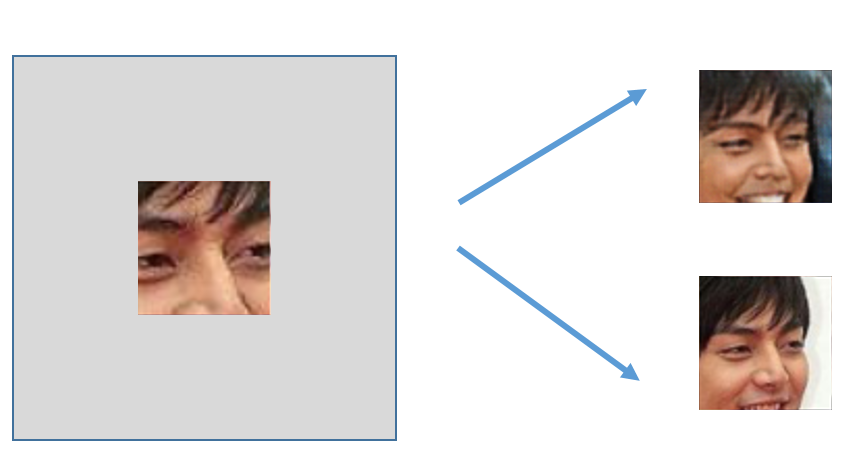

Real-world applications
Probabilistic graphical models have numerous and diverse real-world applications. We provide an overview of the following applications of probablistic graphical models, which are just a few examples of their many practical uses.
- Images
- Language
- Audio
- Science
Probabilistic Models of Images
Consider a distribution over images (a matrix of pixels) that assigns high probability to images that look realistic and low probability to everything else. Given such model, we can solve a wide array of interesting tasks.
Image Generation
Radford et al. train a probabilistic model that assigns high probability to images that look like bedrooms (based on some training data):
Training Data
If we sample , we are generating new (realistic) images.
Generated Data

Similiarly, we can learn a model for faces or objects:

Note that the images are not perfect and may need to be refined; however, sampling generates images that are very similiar to what one might expect.
In-Painting
Using the same , we can also ‘fill in the rest of the image’. For example, given and a patch of an existing image (e.g., a piece of a photograph), we can sample from and generate different possible ways of completing the image:

Note the importance of a probabilistic model that captures uncertainty: there could be multiple ways to complete the image!
Image Denoising
Similarly, given an image corrupted by noise (e.g., an old photograph), we can attempt to restore it based on our probabilistic model of what images look like:
Language Models
Knowing the probability distribution can also help us model natural langauge utterances. In this case, we want to construct a probability distribution over sequences of words or characters that assigns high probability to proper (English) sentences. This distribution can be gathered by using articles from Wikipedia.
Generation
We can sample from the model and generate new Wikipedia-like articles like the one belowFrom The Unreasonable Effectiveness of Recurrent Neural Networks .
Naturalism and decision for the majority of Arab countries’ capitalide was grounded by the Irish language by [[John Clair]], [[An Imperial Japanese Revolt]], associated with Guangzham’s sovereignty. His generals were the powerful ruler of the Portugal in the [[Protestant Immineners]], which could be said to be directly in Cantonese Communication, which followed a ceremony and set inspired prison, training. The emperor travelled back to [[Antioch, Perth, October 25|21]] to note, the Kingdom of Costa Rica, unsuccessful fashioned the [[Thrales]], [[Cynth’s Dajoard]], known in western [[Scotland]], near Italy to the conquest of India with the conflict. Copyright was the succession of independence in the slop of Syrian influence that was a famous German movement based on a more popular servicious, non-doctrinal and sexual power post. Many governments recognize the military housing of the [[Civil Liberalization and Infantry Resolution 265 National Party in Hungary]], that is sympathetic to be to the [[Punjab Resolution]] (PJS)[http://www.humah.yahoo.com/guardian. cfm/7754800786d17551963s89.htm Official economics Adjoint for the Nazism, Montgomery was swear to advance to the resources for those Socialism’s rule, was starting to signing a major tripad of aid exile.]]
Translation
Suppose that we have gathered a training set of paragraphs that were transcribed in both English and Chinese. We can build a probabilistic model to generate an English sentence conditioned on the corresponding Chinese sentence ; this is an instance of machine translation.
Audio Models
We can also use probabilitic graphical models for audio applications. Suppose we construct a probability distribution over audio signals that assigns high probability to ones that sound like human speech.
Upsampling or Super-Resolution
Given a low resolution version of an audio signal, we can attempt to increase its resolution.
Super resolution of audio signals demo
Speech synthesis
As we did in image processing, we can also sample the model and generate (synthesize) speech signals.
Super resolution of audio signals demo
Speech recognition
Given a (joint) model of speech signals and language (text), we can attempt to infer spoken words from audio signals.

Applications in Science Today
Error Correcting Codes
In the non-theoretical world, probabilistic models are often used to model communication channels (e.g., Ethernet or Wifi). i.e., if you send a message over a channel, you might get something different on the other end due to noise. Error correcting codes and techniques based on graphical models are used to detect and correct communication errors.
Computational Biology
Graphical models are also widely used in computational biology. For example, given a model of how DNA sequences evolve over time, it is possible to reconstruct a phylogenetic tree from DNA sequences of a given set of species.

Ecology
Graphical models are used to study phenomena that evolve over space and time, capturing spatial and temporal dependencies. For example, they can be used to study bird migrations.

Economics
Graphical models can be used to model spatial distributions of quantities of interests (e.g., assets or expenditures based measures of wealth).

The last two applications are what are known as spatio-temporal models. They depend on data that is collected across time as well as space.
| Index | Previous | Next |